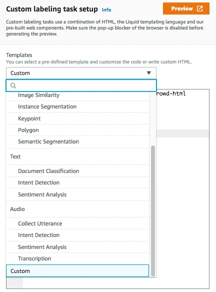

Published: 2019-04-24 | Originally published at AWS Blog
Published: 2019-04-24
Originally published at https://aws.amazon.com/blogs/aws/amazon-sagemaker-ground-truth-keeps-simplifying-labeling-workflows/
Launched at AWS re:Invent 2018, Amazon SageMaker Ground Truth is a capability of Amazon SageMaker that makes it easy for customers to efficiently and accurately label the datasets required for training machine learning systems.
A quick recap on Amazon SageMaker Ground Truth
Amazon SageMaker Ground Truth helps you build highly accurate training datasets for machine learning quickly. SageMaker Ground Truth offers easy access to public and private human labelers and provides them with built-in workflows and interfaces for common labeling tasks. Additionally, SageMaker Ground Truth can lower your labeling costs by up to 70% using automatic labeling, which works by training Ground Truth from data labeled by humans so that the service learns to label data independently.
Amazon SageMaker Ground Truth helps you build datasets for:
You can choose to use your team of labelers and route labeling requests directly to them. Alternatively, if you need to scale up, options are provided directly in the Amazon SageMaker Ground Truth console to work with labelers outside of your organization. You can access a public workforce of over 500,000 labelers via integration with Amazon Mechanical Turk . Alternatively, if your data requires confidentiality or special skills, you can use professional labeling companies pre-screened by Amazon, and listed on the AWS Marketplace .
Announcing new features
Since the service was launched, we gathered plenty of customer feedback (keep it coming!), from companies such as T-Mobile, Pinterest, Change Healthcare, GumGum, Automagi and many more. We used it to define what the next iteration of the service would look like, and just a few weeks ago, we launched two highly requested features:

Today, we’re happy to announce another set of new features that keep simplifying the process of building and running cost-effective labeling workflows. Let’s look at each one of them.
Job chaining
Customers often want to run a subsequent labeling job using the output of a previous labeling job. Basically, they want to chain together labeling jobs using the outputted labeled dataset (and outputted ML model if automated data labeling was enabled). For example, they may run an initial job where they identify if humans exist in an image, and then they may want to run a subsequent job where they get bounding boxes drawn around the humans.
If active learning was used, customers may also want to use the ML model that was produced in order to bootstrap automated data labeling in a subsequent job. Setup couldn’t be easier: you can chain labeling jobs with just one click!
Job tracking
Customers want to be able to see the status of the progress of their labeling jobs. We now provide near real-time status for labeling jobs.
Long-lived jobs
Many customers use experts as labelers, and these individuals perform labeling on a periodic basis. For example, healthcare companies often use clinicians as their expert labelers, and they can only perform labeling occasionally during downtime. In these scenarios, labeling jobs need to run longer, sometimes for weeks or months. We now support extended task timeout windows where each batch of a labeling job can run for 10 days, an increase from 4 days.
Dynamic custom workflows
When setting up custom workflows, customers want to insert or use additional context in addition to the source data. For example, a customer may want to display the specific weather conditions above each image in the tasks they send to labelers; this information can help labelers better perform the task at-hand. Specifically, this feature allows customers to inject output from previous labeling jobs or other custom content into the custom workflow. This information is passed into a pre-processing Lambda function using the augmented manifest file that includes the source data and additional context. The customer can also use the additional context to dynamically adjust the workflow.
New service providers and new languages
We are listing two new data labeling service providers onto the AWS Marketplace : Vivetic and SmartOne . With the addition of these two vendors, Amazon SageMaker Ground Truth will add support for data labeling in French, German, and Spanish.
Regional expansion
In addition to US-East (Virginia), US-Central (Ohio), US-West (Oregon), Europe (Ireland), and Asia Pacific (Tokyo), Amazon SageMaker Ground Truth is now available in Asia Pacific (Sydney).
Customer case study: ZipRecruiter
ZipRecruiter is an online employment marketplace which uses AI-driven matching technology to actively connect millions of all-sized businesses and job seekers. They’ve been using Amazon SageMaker since launch. Says ZipRecruiter CTO Craig Ogg: “ZipRecruiter’s AI-powered algorithm learns what each employer is looking for and provides a personalized, curated set of highly relevant candidates. On the other side of the marketplace, the company’s technology matches job seekers with the most pertinent jobs. And to do all that efficiently, we needed a Machine Learning model to extract relevant data automatically from uploaded resumes”.
Of course, building datasets is a critical part of the machine learning process, and it’s often expensive and extremely time-consuming. To solve both problems, ZipRecruiter turned to Ground Truth and one of our labeling partners, iMerit.
As Craig puts it: “ZipRecruiter’s matching technology learns what each employer is looking for and provides a personalized, curated set of highly relevant candidates. On the other side of our marketplace, we match job seekers with the most pertinent jobs. And to do all that efficiently, we needed a Machine Learning model to extract relevant data automatically from uploaded resumes. Amazon SageMaker Ground Truth will significantly help us reduce the time and effort required to create datasets for training. Due to the confidential nature of the data, we initially considered using one of our teams but it would take time away from their regular tasks and it would take months to collect the data we needed. Using Amazon SageMaker Ground Truth, we engaged iMerit, a professional labeling company that has been pre-screened by Amazon, to assist with the custom annotation project. With their assistance we were able to collect thousands of annotations in a fraction of the time it would have taken using our own team.”
Getting started
I hope that this post was informative, and that the new features will let you build even faster. Please try Amazon SageMaker Ground Truth , let us know what you think, and help us build the next iteration of this cool service!
Julien Simon is an expert in Practical AI, currently serving as Chief Evangelist at Arcee AI. Named #1 AI Evangelist globally by AI Magazine in 2021, he champions cost-effective, privacy-first AI solutions through Small Language Models, challenging the industry trend toward expensive, large-scale alternatives.
With over 30 years of technology leadership—including executive roles at AWS, Hugging Face, Criteo, and other major companies—Julien has delivered 650+ speaking engagements across 90+ cities in 38 countries. His practical approach empowers enterprises to achieve superior AI outcomes while maintaining cost efficiency and operational simplicity.
© 2025 Julien Simon - Leading Voice in Practical AI | julien.org
{kind=link}